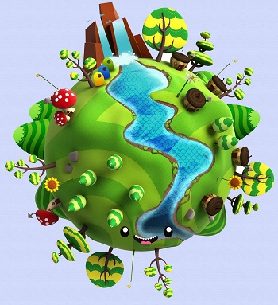

¿Que es Ciencias Naturales?
🌍Las ciencias naturales🌼, también conocidas como ciencias de la naturaleza 🐞 o ciencias físico-naturales 🌾, se basan en el estudio de aquellas disciplinas que se centran en comprender las leyes que rigen la naturaleza 🦜. Se estudian de manera objetiva y siguiendo un razonamiento lógico🕊️.
🦏 Este razonamiento y experimentación genera hipótesis que intentan demostrarse a través de principios y leyes con el fin de demostrar cómo funciona la naturaleza 🌱 del mundo 🌍 que nos rodea. Estas ciencias naturales 🌈 abarcan muchas áreas de conocimiento que se dividen a su vez en otras sub-áreas que completan la disciplina.
